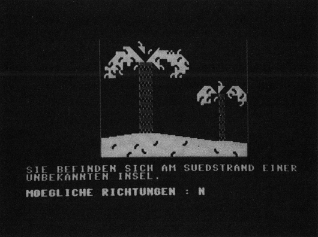

Odyssey – Kampf mit der Wildnis
Sie sind nach einem Schiffsunglück auf einer einsamen Insel gestrandet. Finden Sie den Weg zurück in die Zivilisation und entkommen Sie dem Abenteuer Wildnis.

Odyssey ist ein deutsches Textadventure, das von Hans-Günther Schreck, einem Freund von mir, geschrieben worden ist. Hans begann mit dem Programmieren dieses Spieles, als ich gerade mit der Fertigstellung meiner »Gordon Saga 1« beschäftigt war. Ich erwähne dies an dieser Stelle, da mir Hans bei der Fertigstellung von Gordon Saga viel geholfen hat – und zwar als Testspieler. Ich beobachtete ihn stundenlang beim Spielen von Gordon Saga und machte mir Notizen, wo das Spiel zu einfach oder zu schwer war und wo es am Parser mangelte. Ich kann ein solches Testen jedem Adventure-Autor wärmstens empfehlen. Ein Adventure zu programmieren nimmt viel Zeit in Anspruch. Wer eines fertiggestellt hat, kennt meist jede Szene in- und auswendig und hat keine Lust mehr zu langem Probespielen, da man dann meist auch schon an neue Projekte denkt. Läßt man jedoch einen Bekannten, der nichts mit dem Spiel zu tun hat, einmal probespielen, so merkt man schnell, ob am Programm noch etwas zu verbessern ist. Hier ein Beispiel:
In der Handlung der Gordon Saga muß an bestimmten Stellen eine Tür geöffnet werden. Ich hatte hierzu als Syntax »ÖFFNE DIE TÜR« vorgesehen. Einige Testspieler gaben »ÖFFNE DIE TÜRE« ein und konnten nicht verstehen, warum dieser Befehl nicht verstanden wurde, da es sich bei »TÜRE« um einen offensichtlich verbreiteten Rechtschreibfehler handelt. Ich nahm im Wortschatz für »TÜR« also auch »TÜRE« auf. Ein anderer gab »MACHE DIE TÜR AUF« ein. Auch hier verbesserte ich den Parser. Nach langen Teststunden war Gordon Saga endlich fertig. Besonders ratsam ist es auch, als Testpersonen Leute herzunehmen, die zuvor noch kein Adventure gespielt haben. Dann merkt man am besten, wie gut der Parser des Spieles ist.
Die Spielhandlung
Nun aber zu »Odyssey«. Das Spiel ist komplett in Basic geschrieben, die Grafik besteht aus dem Commodore-Standardzeichensatz, ist jedoch so gut, daß man dies bei manchen Bildern einfach nicht glauben kann. Der Parser entspricht keinesfalls dem in diesem Sonderheft gesetzten Standard. Trotzdem werden ganze deutsche Sätze verstanden, was deutlich über dem Standard gewöhnlicher Abtipp-Adventures liegt.
Sie sind nach einem Schiffsunglück auf einer einsamen Insel gestrandet und müssen sich in der Wildnis herumschlagen, Raubtiere bekämpfen oder sich mit Eingeborenen herumschlagen. Dabei begegnen Sie noch vielen anderen Geheimnissen wie Schätzen oder Botschaften. Das Spiel zeichnet sich durch viel Spielwitz und Originalität aus. Mehr wird nicht verraten – einfach abtippen und spielen.
(Michael Nickles/dm)